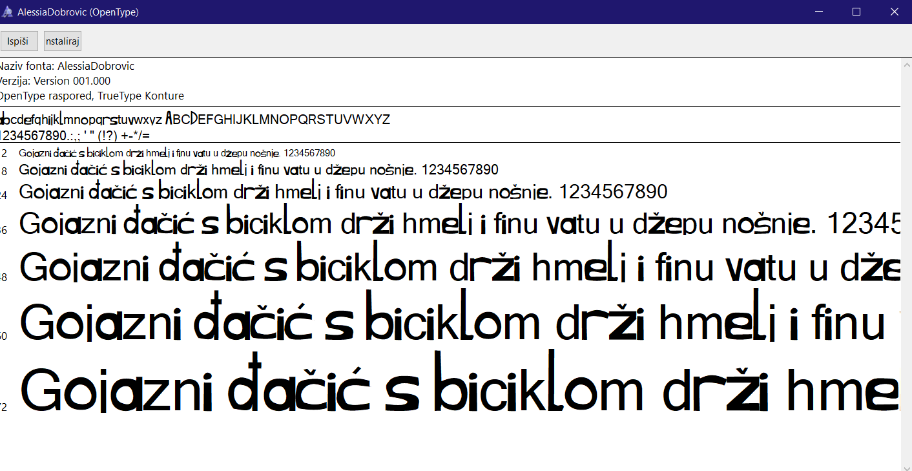
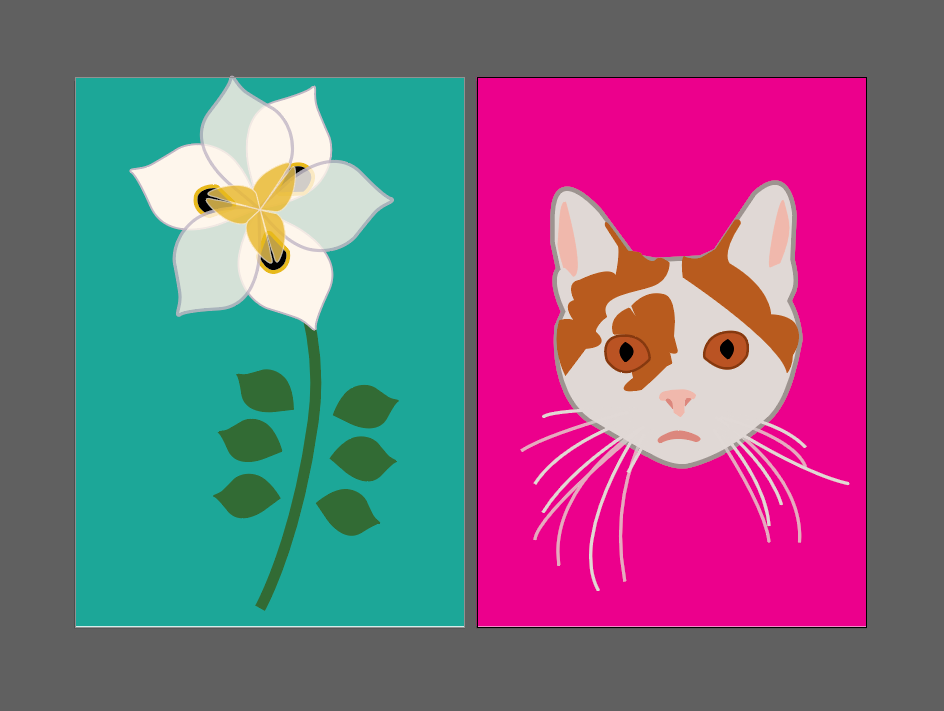
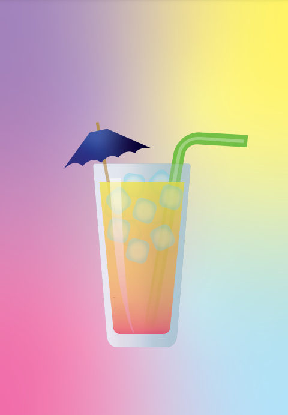
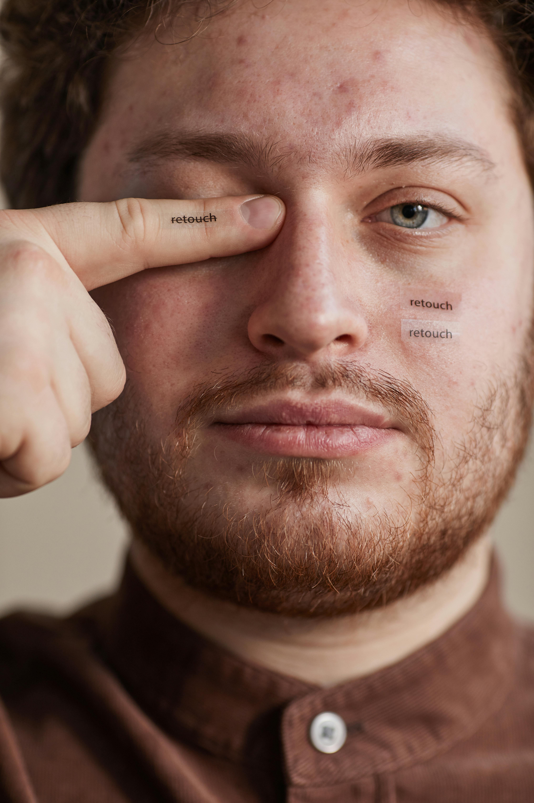
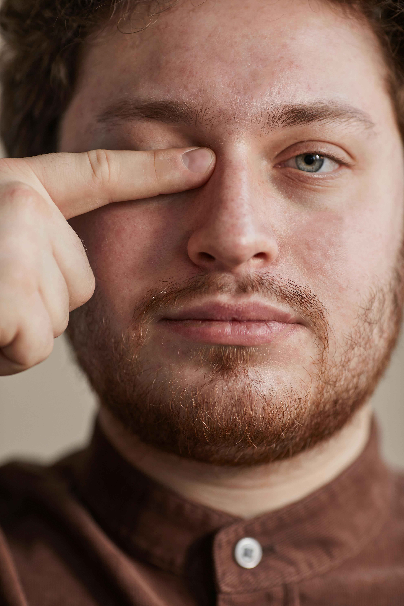
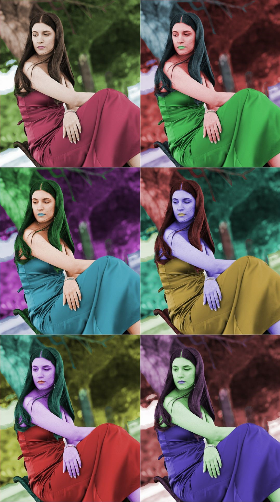
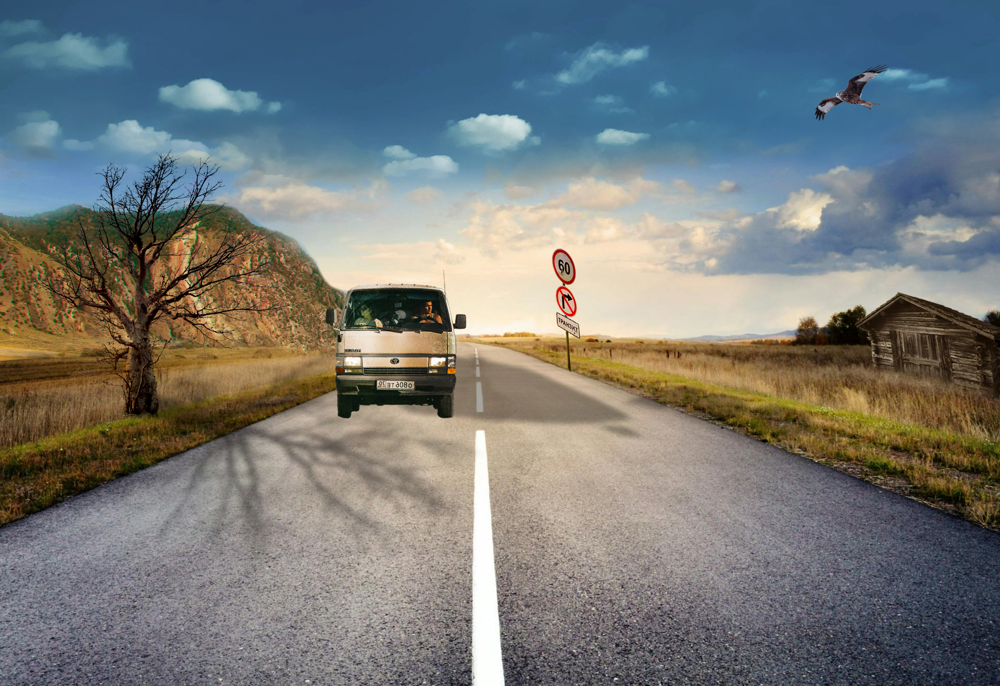

Napravila sam svoj font koji se može vidjeti u naslovu početne stranice.
Zadatak ove vježbe bio je umetnuti uzorak bezierovih krivulja u font iz 1. vježbe, promijeniti im debljinu i napraviti gradijent debljine linija i boja.

U ovoj vježbi smo naučili koristiti se novim alatima kao što su transparencija, rotacija i sl.
Naučili smo se detaljnije koristiti alatima transparencije i gradijenta.
Ovdje kreću vježbe na Photoshopu i prvo smo se bavili retuširanjem.
 U ovoj vježbi smo kolorirali crno-bijele fotografije.
U ovoj vježbi smo radili fotomontažu.

Kinemagraf.

Montaža videa u Premieru.